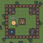
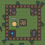

Empfohlen
Bestätigt
34 Tsd. Aufrufevor 22 Minuten
1,7 Mio. Aufrufevor 7 Jahren
Bestätigt
362 Tsd. Aufrufevor 5 Tagen
4,4 Mio. Aufrufevor 1 Monat
508 Tsd. Aufrufevor 1 Monat
Bestätigt
332 Tsd. Aufrufevor 1 Monat
674 Tsd. Aufrufevor 1 Monat
Bestätigt
359 Tsd. Aufrufevor 11 Monaten
Kürzlich hochgeladen
Empfohlene Videos für mich
1 Tsd. aktive Zuschauer
Bestätigt
760 Tsd. Aufrufevor 6 Tagen
779 Tsd. Aufrufevor 5 Tagen
Bestätigt
92 Tsd. Aufrufevor 20 Stunden
Bestätigt
583 Tsd. Aufrufevor 5 Tagen
Bestätigt
30 Tsd. Aufrufevor 3 Stunden
Empfohlene Videos für mich
2,3 Mio. Aufrufevor 6 Monaten
2,4 Mio. Aufrufevor 1 Jahr
Bestätigt
401 Tsd. Aufrufevor 2 Wochen
Bestätigt
469 Tsd. Aufrufevor 3 Tagen
3 Mio. Aufrufevor 3 Jahren
Bestätigt
186 Tsd. Aufrufevor 3 Jahren
Weiter ansehen
14 Tsd. Aufrufevor 2 Jahren

Empfohlene Videos für mich
Bestätigt
389 Tsd. Aufrufevor 2 Monaten
1,7 Mio. Aufrufevor 1 Monat
5,1 Mio. Aufrufevor 2 Monaten
Bestätigt
535 Tsd. Aufrufevor 3 Jahren
9,2 Mio. Aufrufevor 4 Monaten
Bestätigt
423 Mio. Aufrufevor 2 Monaten
Nächstes Video
Autoplay
Wenn Autoplay aktiviert ist, wird die Wiedergabe automatisch mit einem der aktuellen Videovorschläge fortgesetzt.
Why I Love Vimeo
Anzeige
Mechanisms
.jpg)
Chain-Inventor Studio (Video Tutorial with Audio Narration) Autodesk Inventor
Am 27.11.2013 veröffentlicht
.jpg)
.jpg)
.jpg)
.jpg)
.jpg)
.jpg)
.jpg) 
